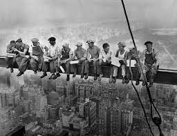

Blog
An art blog to talk about recent goings on.
Iconic photography/art
The pictures shown below have been a huge part in the creation of what has made the art world. The way that these creations have continued to progressively increase what we know in the world of art and how it's been impacted throughout the decades. Now we look back on what we know as the most impactful pieces.
The Skyscraper incidents!
This photograpgh shows of lunch time on top of a skyscraper in New York City of 1932. As the fearless construction workers sat a top a rod with no fear of falling. They helped in the building of the Rockfeller and yet a skyscraper seems like nothing! They've remained un-identified yet will still remain icons because they gave us this photo!
A Starry Night!
The Starry Night is a well known oil-painting by the one and only, Vincent Van Gogh. Painted From the view of his east-facing window of his asylum. Only painted just before the sunrise to get a crisp depiction of the night.

Many pieces of art such as these have a large impact on the economy whether we realize it or not! We can find the most inspiration through these types of pieces of art that have many meanings behind them!